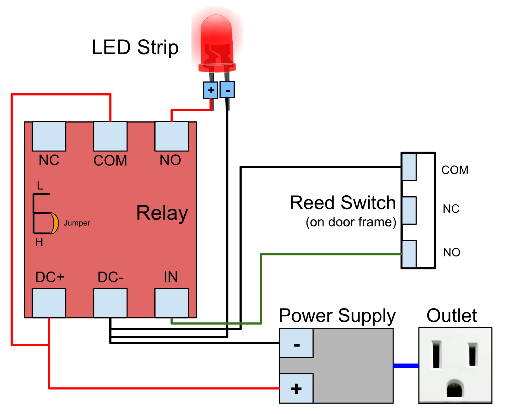
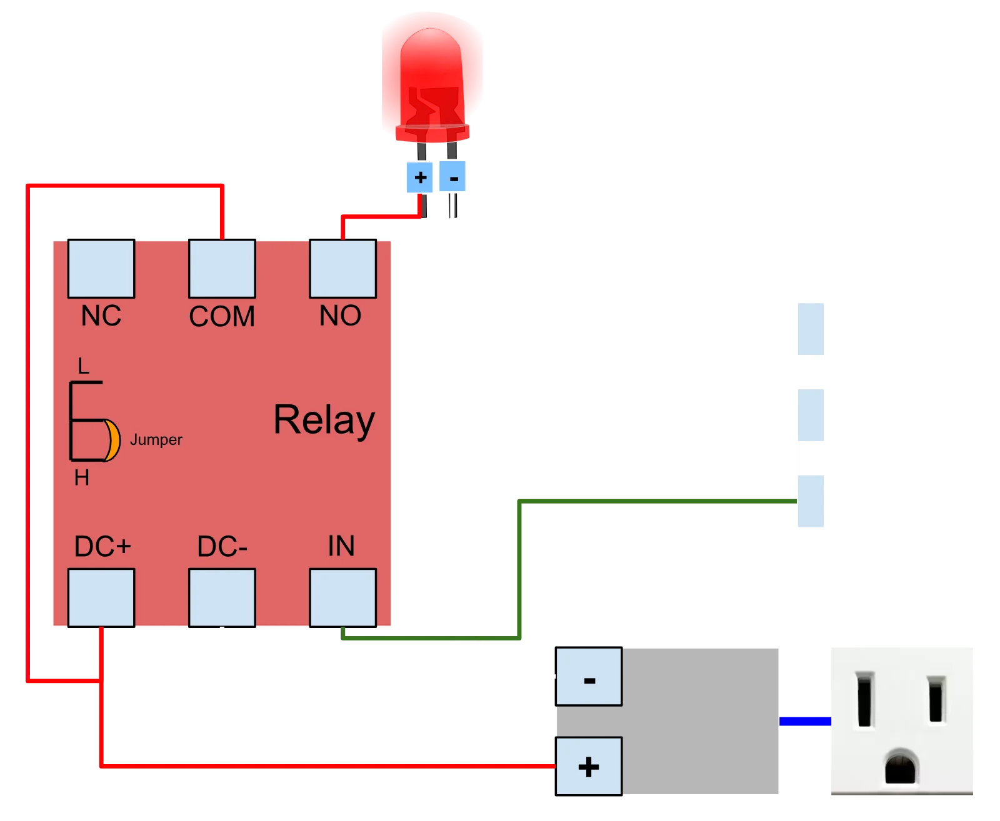

Door-Automated Pantry Lighting System
I first got the idea of this project when the cheap motion-activated, battery powered light, which only pointed in a small area chewed through its fifth pair of AA batteries in under a year. Not only did the motion sensor on the light not function properly, but the light was dim. I thought back to when in my old house, these little sensors were installed on every window frame and window as a part of the house alarm system. I looked up what those sensors were called, what they did, and how they worked. From that point on, I used what I had learned in the past year in my Digital Electronics class to design a schematic diagram to plan out the circuit.
Research and Planning
After doing some research, I learned that these sensors were called reed switches, and combined with a relay module that could be used to control power sent to an LED strip to illuminate the pantry. Finishing the schematic and double checking it with different sources was the final step before getting the parts necessary to build the project.
Parts Needed
- Reed switch
- Relay module (5V)
- LED strip
- Power supply
- 16 gauge wire
- Small plastic casing for reed switch
Tools Needed
- Driver
- Screwdriver
- Handsaw
- Wire strippers
Circuit Design
To start, I stripped the 16 gauge wire and connected it according to the schematic I designed. Here is a description of the schematic:


- Power supply plugs into wall socket
- Power supply positive terminal connects to the "DC +" terminal on the relay module
- Power supply negative terminal connects to the "DC -" terminal on the relay module
- Power supply negative terminal connects to the "COM" terminal on the reed switch
- Power supply negative terminal connects to the negative terminal on the LED strip
- Power supply positive terminal connects to the "COM" terminal on the relay module
- "IN" terminal on the relay module connects to the "NO" terminal on the reed switch
- Positive terminal on the LED strip connects to the "NO" terminal on the relay module
Testing and Troubleshooting
Once I had wired this all up, I brought the other reed switch near the wired reed switch to test if the circuit worked. I'd hear a clicking sound, but the LED strip would not turn on in the first place. After doing a bunch of research, I found out that the relay's power could be limited by a "High/Low Level Trigger". This trigger was set to "Low" due to the default location of a jumper. To change this, I removed the jumper and placed it on the other two pins to set the trigger to "High". After doing this, I tested the circuit again, and this time it worked! By bringing the other reed switch close to the wired reed switch, I emulated the act of the pantry door closing, which would cause the LED strip to turn off. The "NO" terminals on the reed switch and relay module stand for "Normally Open", meaning that when the reed switch is not activated, the circuit is completed and power is sent to the LED strip.
Installation
After a few successful tests, I started to plan out where to drill in both reed switches, one on the door frame and the other on the door itself. I ran into a small problem here, as this pantry door had a magnet at the top of it to help it stay closed. This magnet would interfere with the reed switch, causing it to stay activated even when the door was open. To overcome this, instead of putting the reed switch at the top of the door frame, I put it slightly further down the frame out of range of the magnet. I then made sure to put the other reed switch on the door, in range of the wired reed switch, so that when the door was closed, the two reed switches would be close enough to each other to activate the circuit.
I then took a handsaw and cut two small holes in the small plastic case for the relay so the wires could fit through while also keeping the relay module protected. Using a driver and screwdriver, I then took a screw and screwed the relay casing into the drywall, and then another screw to hold the relay module inside the casing. After putting on the cover, I hid the wires going from the wall socket to the relay module to the reed switch to the LED strip using some cable clips and blue tape. I then cut a strip of LED lights to fit the length of the pantry and stuck it on the inside wall above the door frame. This location of the LED lights would reflect the light off of the white ceiling of the pantry. Not only was the pantry now fully illuminated, but the light was not directly in the eyes of anyone opening the door.
Conclusion
Overall, this project was very fun to plan and make. I love making projects that actually solve a real-world, applicable problem. This one did, in a creative, efficient, and impactful way. After roughly a year of this solution, I can say that this has worked quite well. In hindsight, I should have added a manual override switch that can keep the lights off even when the door stays open. Sometimes, the pantry door will be kept open for awhile, where a manual override switch would be helpful to aid in energy efficiency.